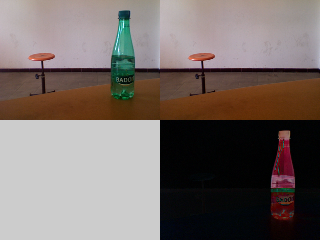

| Name |
remember() |
| Examples |
import hypermedia.video.*;
OpenCV opencv;
void setup() {
size( 320, 240 );
// open video stream
opencv = new OpenCV( this );
opencv.capture( 160, 120 );
}
void draw() {
opencv.read(); // grab frame from camera
image( opencv.image(), 0, 0); // show the original image
opencv.absDiff(); // make the difference between the current image and the image in memory
image( opencv.image(OpenCV.MEMORY), 160, 0 ); // display the image in memory on the right
image( opencv.image(), 160, 120 ); // display the result on the bottom right
}
void keyPressed() {
opencv.remember(); // store the actual image in memory
}
|
| Description |
Place the image (original or current) in memory.
If specified, flip the stored image around the given axis.
Used by absDiff() to compare two images (for background extraction, for example). |
| Syntax |
remember();
remember(type);
remember(type, mode);
|
| Parameters |
| type |
int : which image to be stored: SOURCE or BUFFER |
| mode |
int : the used axis: FLIP_HORIZONTAL, FLIP_VERTICAL or FLIP_BOTH |
|
| Return |
None |
| Usage |
Application |
| Related |
absDiff()
|